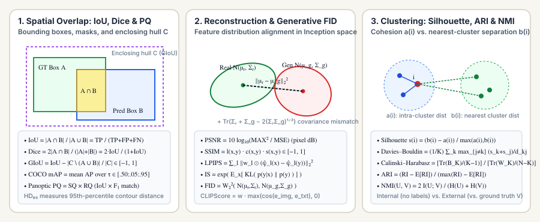

Generative Vision & Clustering Metrics: Inception Score, FID, Silhouette, ARI, and NMI
When evaluating generative image models (Diffusion, Flow Matching, GANs) or unsupervised representation clusters, there is no single ground-truth target label per sample. Generative vision metrics compare the distribution of synthesized images $p_g$ against real data $p_r$ in pretrained feature space, while clustering metrics evaluate either internal geometric separation or permutation-invariant alignment with ground-truth partitions.

1. Generative Vision: Inception Score (IS) and Fréchet Inception Distance (FID)
Given a generator $p_g$, passing synthesized images $x \sim p_g$ through an ImageNet-pretrained Inception classifier $p(y\mid x)$ yields two complementary distributional metrics:
- Inception Score (IS, Salimans et al. 2016): A strong generator should produce sharp, recognizable individual images (low conditional entropy $H(Y\mid X)$) while covering all classes across the dataset (high marginal entropy $H(Y)$ for $p(y) = \mathbb{E}_{x\sim p_g}[p(y\mid x)]$). Exponentiating the mutual information $I(X; Y) = H(Y) - H(Y\mid X)$ gives:
$$\operatorname{IS}(p_g) = \exp\!\Big(\mathbb{E}_{x \sim p_g}\big[D_{\text{KL}}\big(p(y\mid x)\,\big\|\,p(y)\big)\big]\Big) = \exp\!\big(H(Y) - H(Y\mid X)\big) \in [1, C].$$Blind spot of IS: Because $\operatorname{IS}$ never inspects the real data distribution $p_r$, a generator that memorizes and outputs a single training image per class achieves maximum $\operatorname{IS}$ despite zero intra-class diversity.
- Fréchet Inception Distance (FID, Heusel et al. 2017): Embeds both real images $x \sim p_r$ and generated images $\tilde x \sim p_g$ into the $2048$-dimensional
pool3feature layer of Inception-v3, models each feature distribution as a multivariate Gaussian $\mathcal{N}(\boldsymbol{\mu}_r, \boldsymbol{\Sigma}_r)$ and $\mathcal{N}(\boldsymbol{\mu}_g, \boldsymbol{\Sigma}_g)$, and computes their squared $2$-Wasserstein (Fréchet) distance:$$\operatorname{FID} = W_2^2\big(\mathcal{N}(\boldsymbol{\mu}_r, \boldsymbol{\Sigma}_r),\, \mathcal{N}(\boldsymbol{\mu}_g, \boldsymbol{\Sigma}_g)\big) = \|\boldsymbol{\mu}_r - \boldsymbol{\mu}_g\|_2^2 + \operatorname{Tr}\!\left(\boldsymbol{\Sigma}_r + \boldsymbol{\Sigma}_g - 2(\boldsymbol{\Sigma}_r\boldsymbol{\Sigma}_g)^{1/2}\right).$$Here $\|\boldsymbol{\mu}_r - \boldsymbol{\mu}_g\|_2^2$ measures mean feature drift, while the trace term vanishes if and only if $\boldsymbol{\Sigma}_r = \boldsymbol{\Sigma}_g$, penalizing both mode collapse ($\boldsymbol{\Sigma}_g \prec \boldsymbol{\Sigma}_r$) and visual artifacts. Because empirical $\widehat{\operatorname{FID}}_N$ has an $\mathcal{O}(d/N)$ upward finite-sample bias, comparisons must always use the same sample size $N$ (typically $50{,}000$) and identical preprocessing kernels.
Worked 2D FID Example: Suppose in a $2\text{D}$ feature space, real features follow $\boldsymbol{\mu}_r = [0, 0]^\top, \boldsymbol{\Sigma}_r = \operatorname{diag}(4, 9)$ and generated features follow $\boldsymbol{\mu}_g = [1, 2]^\top, \boldsymbol{\Sigma}_g = \operatorname{diag}(1, 4)$:
| Component | Formula | Plugged-in Calculation | Value |
|---|---|---|---|
| Squared Mean Shift | $\|\boldsymbol{\mu}_r - \boldsymbol{\mu}_g\|_2^2$ | $(0 - 1)^2 + (0 - 2)^2 = 1 + 4$ | $\mathbf{5.0000}$ |
| Covariance Geometric Mean | $(\boldsymbol{\Sigma}_r\boldsymbol{\Sigma}_g)^{1/2}$ | $\operatorname{diag}\!\big(\sqrt{4 \times 1},\, \sqrt{9 \times 4}\big) = \operatorname{diag}(2, 6)$ | $\operatorname{diag}(2, 6)$ |
| Covariance Mismatch Trace | $\operatorname{Tr}\!\big(\boldsymbol{\Sigma}_r + \boldsymbol{\Sigma}_g - 2(\boldsymbol{\Sigma}_r\boldsymbol{\Sigma}_g)^{1/2}\big)$ | $(4 + 1 - 2\cdot 2) + (9 + 4 - 2\cdot 6) = 1 + 1$ | $\mathbf{2.0000}$ |
| Total FID ($\downarrow$) | $\|\boldsymbol{\mu}_r - \boldsymbol{\mu}_g\|_2^2 + \text{Trace}$ | $5.0 + 2.0$ | $\mathbf{7.0000}$ |
2. Internal Clustering Metrics: Silhouette, Davies–Bouldin, and Calinski–Harabasz
When no ground-truth labels exist, internal metrics evaluate a partition $U = \{U_1, \dots, U_K\}$ purely from pairwise feature distances $d(x_i, x_j)$:
- Silhouette Coefficient (Rousseeuw, 1987): For point $i \in U_k$, compare mean intra-cluster distance $a(i) = \frac{1}{|U_k|-1}\sum_{j \in U_k \setminus \{i\}} d(i, j)$ (cohesion) against mean distance to the nearest neighboring cluster $b(i) = \min_{m \ne k} \frac{1}{|U_m|}\sum_{j \in U_m} d(i, j)$ (separation):
$$s(i) = \frac{b(i) - a(i)}{\max\big(a(i),\, b(i)\big)} \in [-1, 1].$$
- Davies–Bouldin Index (DBI, $\downarrow$ lower is better) & Calinski–Harabasz Index (CHI, $\uparrow$ higher is better): Let $S_k$ be the mean distance of points in $U_k$ to centroid $\boldsymbol{\mu}_k$, and let $\operatorname{Tr}(\mathbf{B}_K), \operatorname{Tr}(\mathbf{W}_K)$ be between-cluster and within-cluster scatter:
$$\operatorname{DBI} = \frac{1}{K}\sum_{k=1}^{K} \max_{j \ne k}\left(\frac{S_k + S_j}{\|\boldsymbol{\mu}_k - \boldsymbol{\mu}_j\|_2}\right), \qquad \operatorname{CHI} = \frac{\operatorname{Tr}(\mathbf{B}_K) / (K - 1)}{\operatorname{Tr}(\mathbf{W}_K) / (N - K)}.$$
3. External Clustering Metrics: Adjusted Rand Index (ARI) and NMI
When evaluating predicted clusters $U = \{U_1,\dots,U_R\}$ against ground-truth classes $V = \{V_1,\dots,V_C\}$, cluster IDs are arbitrary up to permutation. Let $n_{ij} = |U_i \cap V_j|$ be the contingency table with row sums $a_i = \sum_j n_{ij}$ and column sums $b_j = \sum_i n_{ij}$:
Why must we adjust for chance ($\operatorname{ARI}$) or normalize by entropy ($\operatorname{NMI}$)? As the number of clusters $K \to N$ (assigning each sample to its own singleton cluster), conditional entropy $H(V \mid U)$ trivially drops to $0$, so unadjusted Mutual Information $I(U; V) = H(V) - H(V\mid U)$ and raw Rand Index inflate even when the clustering is useless.
| Metric | Category | Range (Best) | Key Property |
|---|---|---|---|
| Inception Score (IS) | Generative Vision | $[1, C]$ ($\uparrow$) | Measures $\exp(H(Y) - H(Y\mid X))$; does not compare against real images $p_r$. |
| FID | Generative Vision | $[0, \infty)$ ($0.0 \downarrow$) | Squared $2$-Wasserstein distance between real and generated Inception-v3 Gaussians. |
| Silhouette | Internal Clustering | $[-1, 1]$ ($+1.0 \uparrow$) | Point-wise contrast between intra-cluster cohesion $a(i)$ and separation $b(i)$. |
| Davies–Bouldin (DBI) | Internal Clustering | $[0, \infty)$ ($0.0 \downarrow$) | Average worst-case ratio of within-cluster scatter to centroid distance. |
| ARI | External Clustering | $[-1, 1]$ ($+1.0 \uparrow$) | Chance-corrected pairwise agreement; equals $0$ for random partitions. |
| NMI | External Clustering | $[0, 1]$ ($+1.0 \uparrow$) | Mutual information $I(U; V)$ normalized by mean entropy $(H(U)+H(V))/2$. |
4. Reference Python Implementation
import math
from typing import Sequence
def fid_diagonal_gaussians(mu_r: Sequence[float], var_r: Sequence[float],
mu_g: Sequence[float], var_g: Sequence[float]) -> float:
mean_shift = sum((mr - mg) ** 2 for mr, mg in zip(mu_r, mu_g))
cov_trace = sum(vr + vg - 2.0 * math.sqrt(vr * vg) for vr, vg in zip(var_r, var_g))
return round(mean_shift + cov_trace, 4)
def adjusted_rand_index(u_labels: Sequence[int], v_labels: Sequence[int]) -> float:
n = len(u_labels)
u_set, v_set = sorted(set(u_labels)), sorted(set(v_labels))
comb2 = lambda k: k * (k - 1) // 2
grid = {(u, v): 0 for u in u_set for v in v_set}
for u, v in zip(u_labels, v_labels):
grid[(u, v)] += 1
sum_nij = sum(comb2(c) for c in grid.values())
sum_a = sum(comb2(sum(grid[(u, v)] for v in v_set)) for u in u_set)
sum_b = sum(comb2(sum(grid[(u, v)] for u in u_set)) for v in v_set)
expected = (sum_a * sum_b) / comb2(n)
max_ri = 0.5 * (sum_a + sum_b)
return round((sum_nij - expected) / (max_ri - expected), 4) if max_ri != expected else 1.0
def normalized_mutual_info(u_labels: Sequence[int], v_labels: Sequence[int]) -> float:
n = float(len(u_labels))
u_set, v_set = sorted(set(u_labels)), sorted(set(v_labels))
pa = {u: sum(1 for x in u_labels if x == u) / n for u in u_set}
pb = {v: sum(1 for y in v_labels if y == v) / n for v in v_set}
hu = -sum(p * math.log(p) for p in pa.values() if p > 0)
hv = -sum(p * math.log(p) for p in pb.values() if p > 0)
mi = 0.0
for u in u_set:
for v in v_set:
puv = sum(1 for x, y in zip(u_labels, v_labels) if x == u and y == v) / n
if puv > 0:
mi += puv * math.log(puv / (pa[u] * pb[v]))
return round((2.0 * mi) / (hu + hv), 4) if (hu + hv) > 0 else 1.0
print("2D FID :", fid_diagonal_gaussians([0.0, 0.0], [4.0, 9.0], [1.0, 2.0], [1.0, 4.0]))
print("ARI :", adjusted_rand_index([0, 0, 1, 1, 2, 2], [1, 1, 0, 0, 2, 1]))
print("NMI :", normalized_mutual_info([0, 0, 1, 1, 2, 2], [1, 1, 0, 0, 2, 1]))Sources
Salimans et al., Improved Techniques for Training GANs — Inception Score (NeurIPS, 2016); Heusel et al., GANs Trained by a Two Time-Scale Update Rule Converge to a Local Nash Equilibrium — FID (NeurIPS, 2017); Rousseeuw, Silhouettes: A Graphical Aid to the Interpretation and Validation of Cluster Analysis (J. Comp. Appl. Math., 1987); Hubert and Arabie, Comparing Partitions — Adjusted Rand Index (Journal of Classification, 1985).